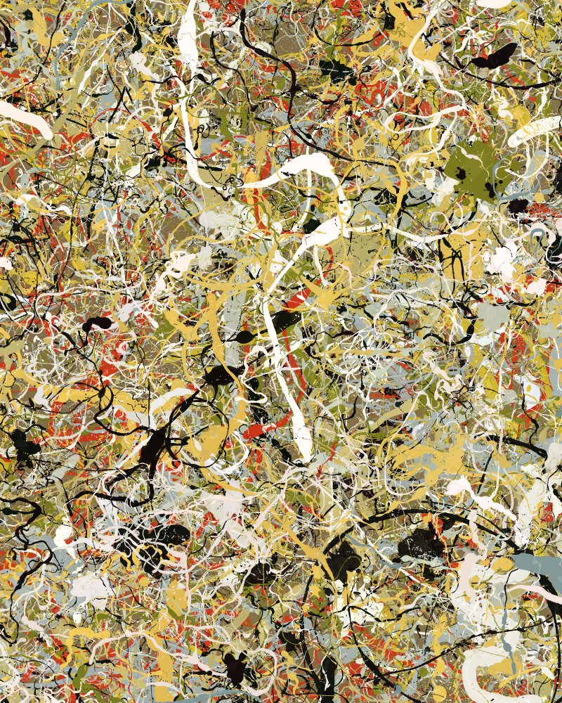
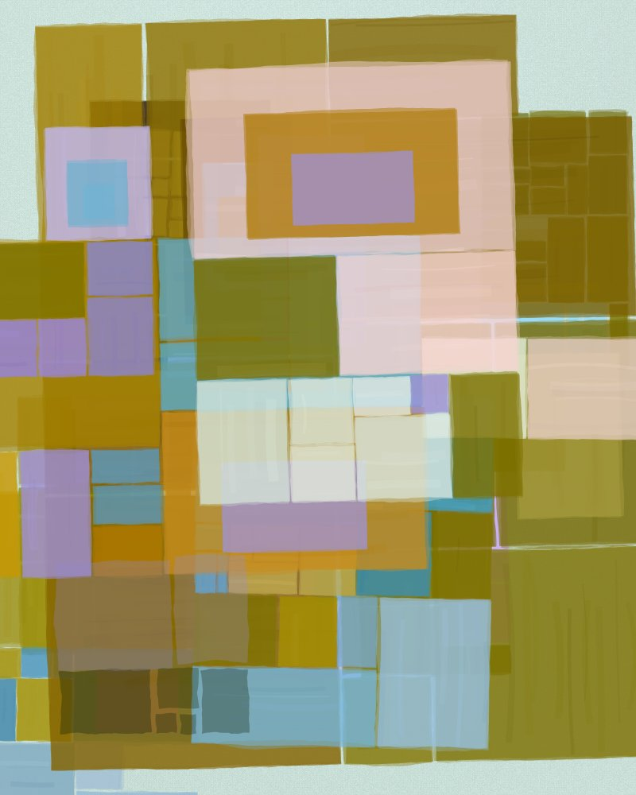

Pollock Dreams
Generative drip painting, endless · with music
One drip painting that never stops being poured, its colours drifting from one Pollock combination to the next.

Rectangle Dreams
Generative glazes, endless · with music
Fractal rectangles glazed one over another forever, their colours walking around the whole colour wheel in harmony.